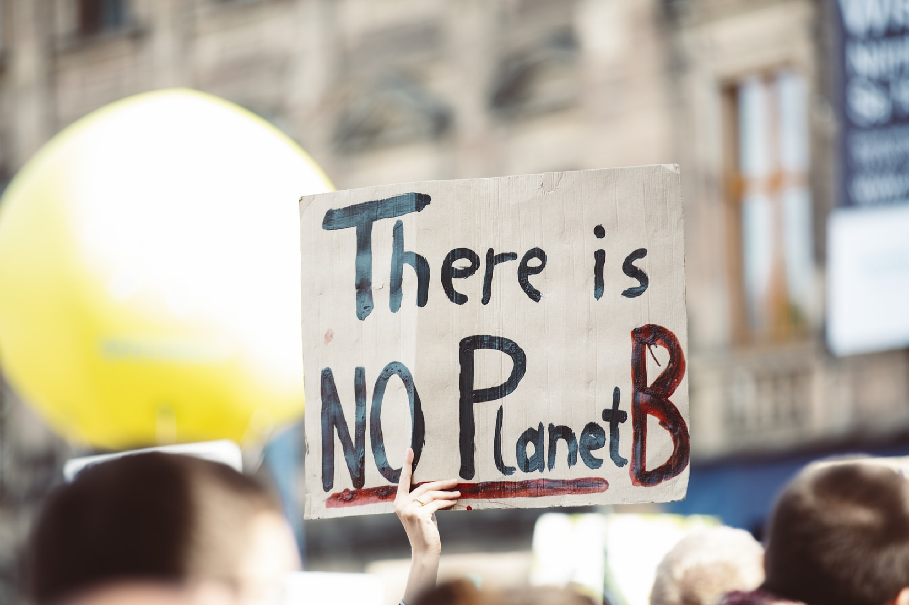

Finance, innovation and technology can be a force for good, to overcome challenges and improve lives. And climate change is the ultimate challenge for humankind”, stressed Mr. Ong Ye Kung, Board member of the Monetary Authority of Singapore (MAS), at the Singapore Fintech Festival 2019. 
One growing area of green finance is fintech. Last year saw the launch of the Green Digital Finance Alliance, which is ostensibly a partnership between Ant Financial, China’s leading online and mobile financial services provider, and UN Environment. Its aim is to align fintech-powered global financial systems with sustainable development, while making green finance an integral part of the daily lives of people and businesses.